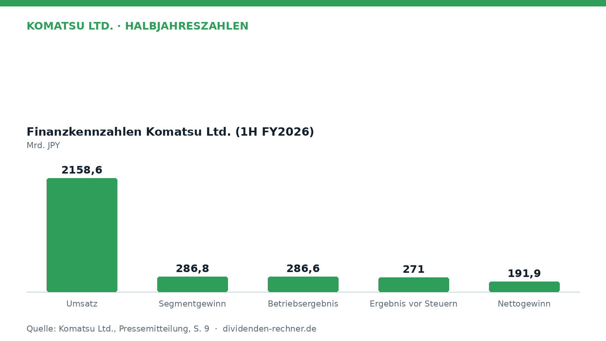
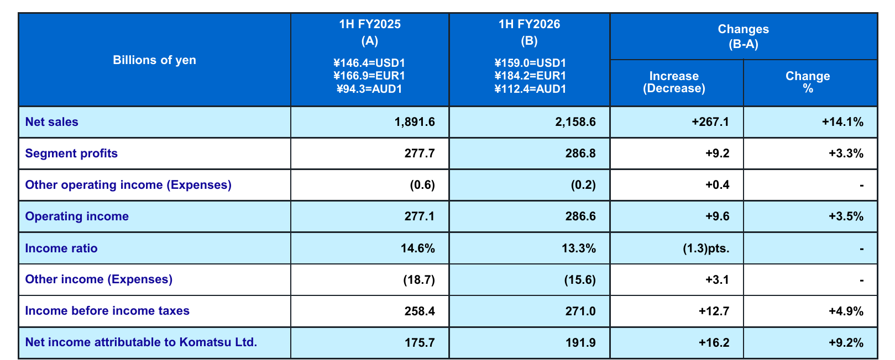
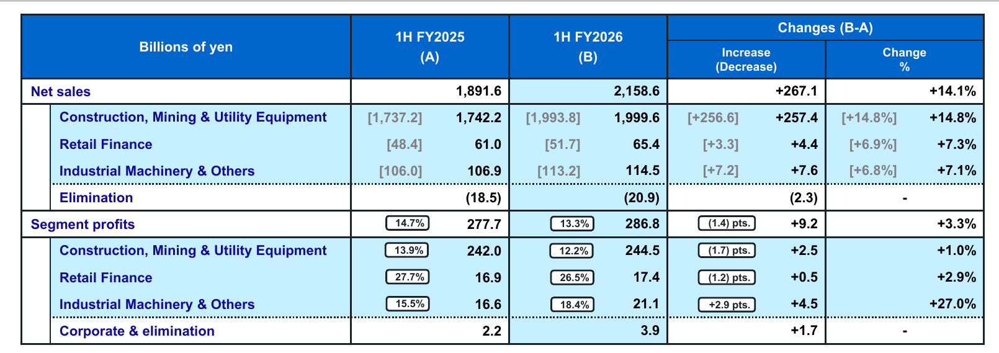
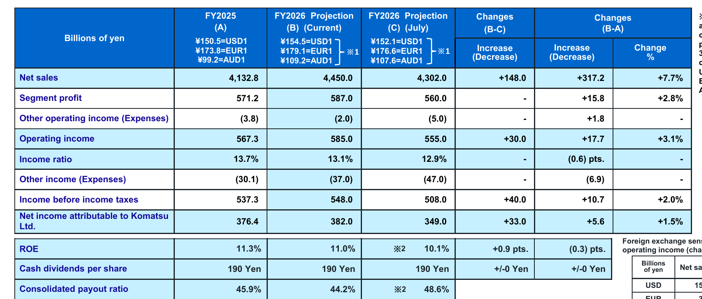

Halbjahreszahlen

Komatsu hebt Jahresprognose nach Umsatzplus im Halbjahr an
Komatsu steigert im ersten Halbjahr 2026 den Umsatz um 14,1 Prozent auf 2.158,6 Milliarden Yen und hebt die Gesamtjahresprognose an.

Kurz gesagt
Umsatz: 2.158,6 Mrd. JPY (+14,1 %) · Gewinn: 191,9 Mrd. JPY (+9,2 %)
- Zahlen: Schwacher Yen, höhere Absatzzahlen und durchgesetzte Preiserhöhungen bringen Komatsu im ersten Halbjahr deutliches Umsatzwachstum.
- Treiber: Das Baumaschinen- und Bergbaugeschäft legt in Nord- und Lateinamerika kräftig zu und gleicht Schwächen in Asien aus.
- Knackpunkt: Gestiegene Produktions- und Fixkosten sowie Zollbelastungen dämpfen die Marge im Kerngeschäft.
Die ausführliche Version
Umsatz springt dank schwachem Yen und höheren Preisen an
Der japanische Baumaschinenhersteller Komatsu blickt auf ein erfolgreiches erstes Halbjahr des Geschäftsjahres 2026 zurück. Die Umsatzerlöse kletterten im Vergleich zum Vorjahreszeitraum um 14,1 % auf 2.158,6 Mrd. JPY. Währungseffekte durch den schwächeren Yen lieferten dabei Rückenwind. Ohne Währungseffekte lag das organische Umsatzplus bei 4,8 %.

Eigene Darstellung nach Daten aus: Komatsu Ltd., Halbjahreszahlen vom 2026-10-29.Das Betriebsergebnis verbesserte sich um 3,5 % auf 286,6 Mrd. JPY. Die operative Marge verringerte sich allerdings von 14,6 % auf 13,3 %. Der Nettogewinn stieg um 9,2 % auf 191,9 Mrd. JPY.

Kennzahlen für das 1. Halbjahr FY2026. Quelle: Komatsu Ltd., Halbjahreszahlen vom 2026-10-29, S. 9. Ausschnitt nur zugeschnitten, sonst unverändert.Baumaschinensparte wächst, Kosten belasten die Marge
Das Hauptgeschäft mit Bau-, Bergbau- und Versorgungsmaschinen steigerte den Umsatz um 14,8 % auf 1.999,6 Mrd. JPY. Regional zeigten sich deutliche Unterschiede: Während der Umsatz in Nordamerika um 24,8 % auf 573,7 Mrd. JPY und in Lateinamerika um 33,9 % auf 454,5 Mrd. JPY zulegte, gingen die Erlöse im Nahen Osten und in Asien zurück. Im Bergbausegment stützte die Nachfrage nach Kupfer- und Goldausrüstung in Lateinamerika und Afrika die Verkäufe.
Der Segmentgewinn der Sparte legte jedoch nur leicht um 1,0 % auf 244,5 Mrd. JPY zu. Während positive Währungseffekte von 40,9 Mrd. JPY, höhere Verkaufsvolumina und Preiserhöhungen von 27,3 Mrd. JPY das Ergebnis stützten, drückten gestiegene Produktionskosten von 46,9 Mrd. JPY sowie höhere Fixkosten auf das Ergebnis. Zudem belasteten US-Zölle das Segmentergebnis unter dem Strich mit netto 26,9 Mrd. JPY.
In der kleineren Sparte für Industriemaschinen und Sonstiges stieg der Segmentgewinn um 27,0 % auf 21,1 Mrd. JPY. Während die Nachfrage aus der Automobilindustrie verhalten blieb, sorgten margenstarke Wartungsdienste und Produkte für die Halbleiterbranche bei der Tochtergesellschaft Gigaphoton für einen deutlichen Gewinn- und Umsatzsprung. Das Finanzierungssegment Retail Finance verzeichnete bei Erlösen von 65,4 Mrd. JPY einen leichten Gewinnanstieg um 2,9 % auf 17,4 Mrd. JPY.

Umsatz und Segmentgewinne nach Geschäftsbereichen. Quelle: Komatsu Ltd., Halbjahreszahlen vom 2026-10-29, S. 10. Ausschnitt nur zugeschnitten, sonst unverändert.Dividende bleibt stabil bei 190 Yen je Aktie
Komatsu plant für das Gesamtjahr eine unveränderte Dividende von 190 Yen je Aktie. Die rechnerische Ausschüttungsquote liegt damit bei 44,2 % des Nettogewinns. Der Konzern schüttet damit einen angemessenen Teil des Gewinns an die Aktionäre aus, während gleichzeitig ausreichend Mittel für Investitionen und das laufende Geschäft im Unternehmen verbleiben.
Bilanz und Cashflow: Solides Polster trotz höherer Lagerbestände
Der Free Cashflow belief sich im ersten Halbjahr auf 20,3 Mrd. JPY. Der operative Cashflow lag bei 139,3 Mrd. JPY und deckte die Investitionsausgaben von 119,0 Mrd. JPY vollständig ab. Für das gesamte Geschäftsjahr strebt das Management weiterhin einen Free Cashflow von 270,0 Mrd. JPY an.
Die Bilanzsumme erhöhte sich gegenüber dem Stichtag am 31. März 2026 um 103,2 Mrd. JPY auf 6.527,2 Mrd. JPY. Hauptgrund dafür war ein Anstieg der Vorräte um 92,8 Mrd. JPY auf 1.694,7 Mrd. JPY. Die Flüssigen Mittel verringerten sich leicht auf 381,3 Mrd. JPY. Die Eigenkapitalquote ging von 54,7 % auf 53,2 % zurück, verbleibt damit aber weiterhin auf einem sehr soliden Niveau.
Ausblick angehoben: Prognose für das Gesamtjahr steigt
Aufgrund der bisherigen Geschäftsentwicklung und der aktuellen Wechselkurse hat das Management die Jahresprognose nach oben angepasst. Für das gesamte Geschäftsjahr 2026 erwartet Komatsu nun einen Umsatz von 4.450,0 Mrd. JPY (zuvor 4.302,0 Mrd. JPY) und ein Betriebsergebnis von 585,0 Mrd. JPY (zuvor 555,0 Mrd. JPY).

Prognose der Geschäftsergebnisse für das Gesamtjahr FY2026. Quelle: Komatsu Ltd., Halbjahreszahlen vom 2026-10-29, S. 19. Ausschnitt nur zugeschnitten, sonst unverändert.Trotz der angehobenen Ziele stehen den Aussichten Risiken gegenüber: So verharren die Verkäufe von Kohlebergbaumaschinen in Asien auf niedrigem Niveau, und die geopolitischen Konflikte im Nahen Osten belasten die regionale Nachfrage. Zudem behält das Unternehmen Rohstoffpreisschwankungen und die weitere Entwicklung der US-Zölle genau im Blick.
Quelle: Komatsu Ltd., Halbjahreszahlen vom 2026-10-29. Rechenwege eigene Berechnung. Keine Anlageberatung.
Hinweis: Dieser Text dient der allgemeinen Information und ist weder Anlage-, Steuer- noch Rechtsberatung. Kapitalanlagen sind mit Risiken verbunden, bis hin zum Totalverlust.